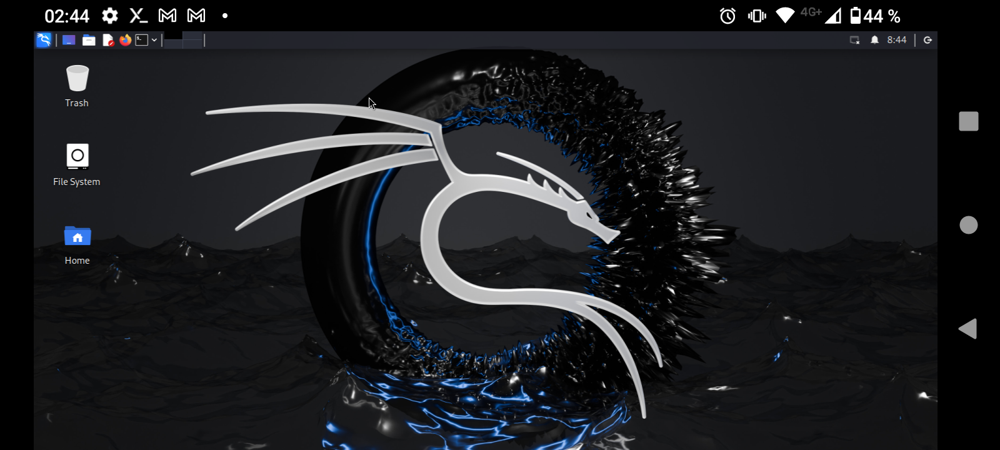

COMO INSTALAR KALI LINUX EN TERMUX:X11
(explicacion detallada)
Lo primero para poder instalar kali linux en termux:X11 primero debes tener instalado termux la version 1.118 la puedes descargar desde github o algun sitio de confianza aqui te dejo un enlace de youtube para enseñarte como instalar los apk desde github.
CLICK PARA VER EL VIDEO
ya instalado termux y termux:X11,abrimos la aplicacion de termux y ejecutamos el comamdo
termux-setup-storage
este comando te pedira acceso a el almacenamiento interno le contestaremos con "Y" y dando a la tecla enter o simplemente aceptando el permiso en pantalla


Ahora ejecutaremos el comando
yes|apt update && yes|apt upgrade
Este comando es para para actualizar los paquetes y evitar las preguntas que te hace durante la instalacion

Despues de actualizar todos los paquetes ejecutaremos el siguiente comando
pkg install wget -y
Este comando al ejecutarlo instalara el paquete wget que lo necitaremos para clonar algunos repositorios

Despues de instalar el paquete wget ejecutaremos el siguiente comando
wget -O install-nethunter-termux https://offs.ec/2MceZWr
El anterior comando no se ejecutara si no tienes instalado el paquete wget,este comando clonara los repocitorios de descarga de kali linux

ya que se clonaran los paquetes de instalacion correctamente ahora vamos a ejecutar
ls
este comando listara las carpetas o los archivos que tengamos en el HOME de termux ahora vamos a identificar el archivo de instalacion de kali linux

ya identificado el archivo lo bamos a darle permisos con el comando
chmod +x install-nethunter-termux
 Despues empezamos la instalacion ejecutando
Despues empezamos la instalacion ejecutando
./install-nethunter-termux
o la alternativa seria ejecutar
bash install-nethunter-termux
 este comando te llevara a un menu donde te da a seleccionar que tipo de instalacion quieres realizar en este caso vamos a ejecutar
este comando te llevara a un menu donde te da a seleccionar que tipo de instalacion quieres realizar en este caso vamos a ejecutar
1
 y comenensara la instalacion aqui tendremos que esperar a que se complete la instalacion,al finalizar nos preguntara que si queremos borrar los archivos de instalacion aqui con testaremos una "Y" y tecla de enter para borrarlos o "N" y tecla de enter para conservarlos(recomiendo que los borren para que no utilize tanto espacio en su dispositivo)
y comenensara la instalacion aqui tendremos que esperar a que se complete la instalacion,al finalizar nos preguntara que si queremos borrar los archivos de instalacion aqui con testaremos una "Y" y tecla de enter para borrarlos o "N" y tecla de enter para conservarlos(recomiendo que los borren para que no utilize tanto espacio en su dispositivo)

ya en la banner de nethunter ejecutaremos
nh
este comando nos abrira una shell de nethunter
 ya en la shell de nethunter ejecutaremos
ya en la shell de nethunter ejecutaremos
sudo su
 despues de ejecutar el anterior comando nos pedira una contraseña que por defecto siempre es "kali"no podras verlo que escribes por que esta encodeado pero ya ejecutandola contraseña tardara un poco pero al final nos cargara una shell de super usuario donde ejecutaremos
despues de ejecutar el anterior comando nos pedira una contraseña que por defecto siempre es "kali"no podras verlo que escribes por que esta encodeado pero ya ejecutandola contraseña tardara un poco pero al final nos cargara una shell de super usuario donde ejecutaremos
sudo apt update

empezaran a cargar el proseso del comando y veremos que nos aparecera el siguiente error
 para resolver ese error ejecutaremos el siguiente comando
para resolver ese error ejecutaremos el siguiente comando
sudo sed -i 's/non-free$/non-free non-free-firmware/' /etc/apt/sources.list
 ya ejecutado el anterior comando volveremos a ejecutar
ya ejecutado el anterior comando volveremos a ejecutar
sudo apt update
 y ahora cargara sin errores.
y ahora cargara sin errores.
 ahora saldremos dandole 2 veces el mismo comando
ahora saldremos dandole 2 veces el mismo comando
exit
y exit
 hasta que estemos fuera de nethunter y nos de la shell de termux nuevamente,ya en la shell de termux ejecutaremos
hasta que estemos fuera de nethunter y nos de la shell de termux nuevamente,ya en la shell de termux ejecutaremos
pkg install termux-x11-nightly -y
 ya finalizada la instalacion de ese paquete ejecutaremos el siguiente con el comando
ya finalizada la instalacion de ese paquete ejecutaremos el siguiente con el comando
pkg install termux-x11-repo -y
 ya finalisada la instalacion de ambos paquetes ahora ejecutaremos
ya finalisada la instalacion de ambos paquetes ahora ejecutaremos
nano ~/ .termux/termux.properties
con este comando editaremos el archivos de termux para poder preceder con la configuracion en termux:X11,ya ejecutado el comando con las flechas de termux nos desplazaresmo a abajo y borraremos el numeral asi como se muestra en la siguiente imagen

 ya completado el anterior proseso ahora ejecutaremos el comando
ya completado el anterior proseso ahora ejecutaremos el comando
nano $PREFIX/bin/nh
y nos desplazaremos abajo hasta donde dice
"-r kali-arm64 \"y abajo de esa opcion agrgaremos el siguiente codigo asi como se muestra en la siguiente imagen


-b /data/data/com.termux/files/usr/tmp:/tmp \
 ya editado el el anterior archivo levantaremos un servidor con el comando
ya editado el el anterior archivo levantaremos un servidor con el comando
termux-x11 :1
 ya levantado el servidor abriremos una nueva sesión ya en la nueva sesión ingresaremos anethunter con el comando
ya levantado el servidor abriremos una nueva sesión ya en la nueva sesión ingresaremos anethunter con el comando


nh
ya en nethunter ejecutaremos los siguientes comandos
export DISPLAY=:1
este comando exportara el dispaly para poder usar kali linux en termu:X11

sudo apt install dbus-x11
este comando instalara el paquete dbus-x11 en nethunter y haci poder levantar una sessión en kali linux

dbus-launch xfce4-session
con este comado al ejecutarlo empezara a correr una session en kali linux


ya que este corriendo la session solo salimos de termux y ingresamos a termux:X11 y listo ya tendrias corriendo kali linux en termux:X11

si cierras la session y quieres volver a entrar solo tienes que ejecutar los siguientes comandos
termux-x11 :1
para levantar un servidor de termux:X11 y ya de despues despliegas una ventana par abrir otra session de termux y ejecutas el comando
nh
pra abrir una shell de nethunter y ya que abra la shell ejecutamos
export DISPLAY=:1
ese comando expotara el display y prodras moverte en kali linux ya depues de ejecutar ese comando ejecutaremos el comando
dbus-launch xfce4-session
este comando levantara la session de kali linux y solo saldras de termux y entraras en la app de termux:X11 y listo tendras la interfaz de kali
si no entiendes algunas de las indicaciones puedes apoyarte de este video CLICK PARA VER EL VÍDEO